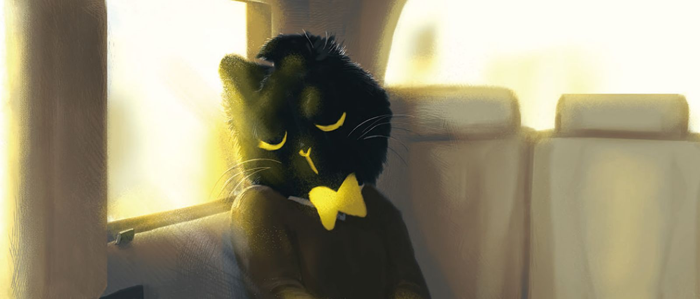
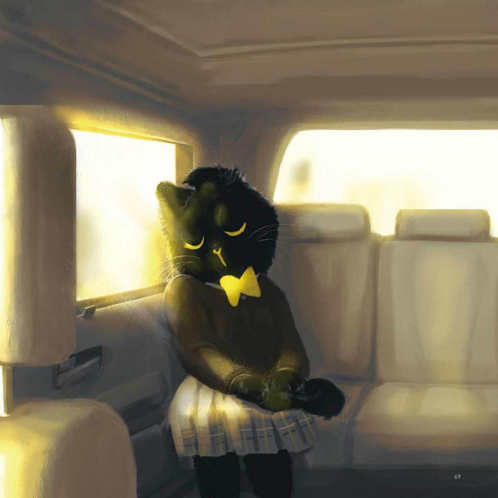
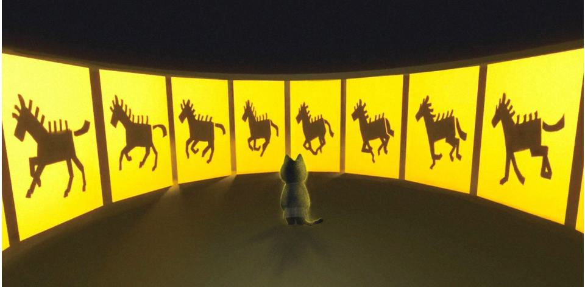
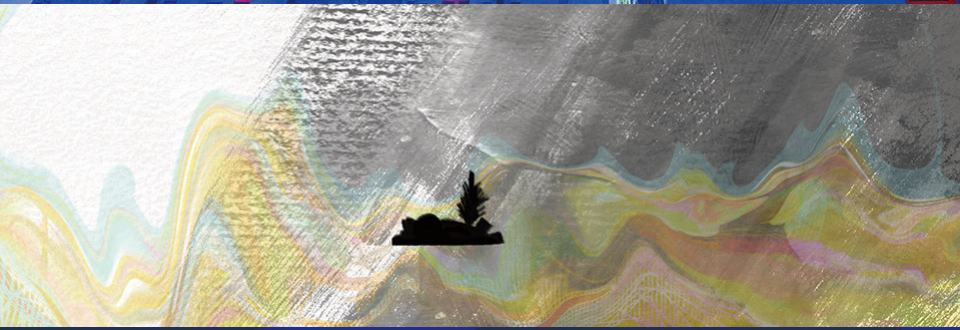
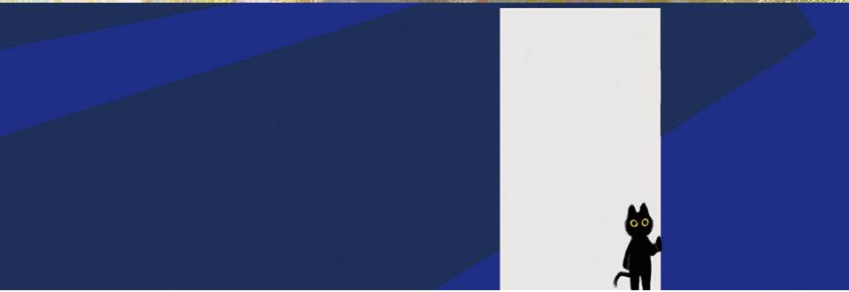
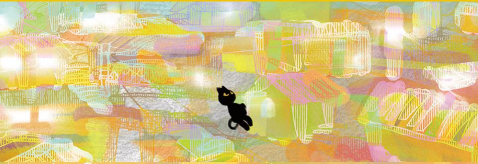
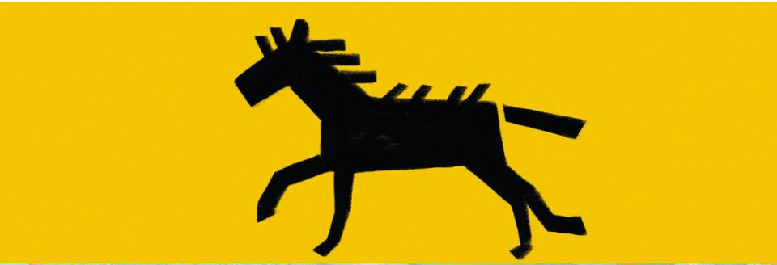

재개발로 인해 달동네가 사라지면서, 어린 시절의 기억을 떠올릴 때면 흙더미로 변해버린 마지막 모습만이 아른거린다.
As the hillside neighborhood disappears due to redevelopment, memories of childhood surface, yet only the final image of it reduced to piles of dirt lingers in my mind.
- 학생
- 이해든 (Lee Headeun)
- 분야
- 애니메이션
- 형식
- 2D·3D 애니메이션
- 장르
- Nostalgia
- 화면비
- 1920×754
- 전시
- 2024 졸업작품전 「Patch Note V3.0」
시놉시스
주인공 고양이는 택시를 타고 오랜만에 옛날에 살았던 동네로 찾아간다. 고양이는 택시 안 미터기의 빠르게 달리는 말을 지켜보면서 기억 속 달동네의 모습에 빠져든다. 환상 속을 더듬어가면서 고양이는 마음 속 한구석에 있는 달동네에 대한 애정을 느끼고 그리워한다. 하지만 도착한 택시의 창문 너머에는 재개발로 바뀐 아파트 단지 만이 남았다.
The protagonist cat takes a taxi to revisit the neighborhood where it once lived. Watching the taxi meter tick quickly, the cat becomes immersed in memories of the hillside village. As it drifts through these visions, the cat feels a deep affection and longing for the hillside neighborhood tucked away in its heart. But beyond the taxi window at its destination, only the redeveloped apartment complexes remain.
기획 의도
어렸을 때 나는 열우물이라고 불리던 달동네 근처에서 살았다. 학교가 바로 옆에 있어서 친구들 대부분도 그 동네에 살았고, 나 역시 그곳에서 함께 놀곤 했다. 그래서인지 과거를 떠올릴 때면 항상 조용했던 그 동네의 풍경이 떠오르곤 한다. 하지만 당시 갑작스럽게 다른 지역으로 이사를 가게 되면서 자연스럽게 그 동네에 대한 기억도 잠시 잊혔다. 그렇게 1년, 그 달동네는 재개발이 결정되었다. 난 아무것도 모른 채 다음 해 스승의 날을 맞아 오랜만에 찾아갔다. 하지만 달동네는 이미 흙더미로 변해 있었고, 포크레인들이 그 위를 오가고 있었다. 그 장면은 생각보다 쉽게 잊히지 않았다. 언젠가부터 달동네를 떠올리려 하면 흙더미의 모습이 함께 떠오르기 시작했다. 이런 모순적인 기억이 잊히기 전에 애니메이션으로 만들어 보고 싶었다. 그리고 이를 통해 지금은 사라진 열우물의 이야기를 사람들에게 전하고 싶었다.
When I was young, I lived near a hillside neighborhood called Yeorumul. My school was right next to this area, so most of my friends lived there, and I often played with them in that neighborhood. Perhaps because of this, whenever I recall the past, the quiet scenery of that place always comes to mind. However, when my family moved unexpectedly to a different district, the memories of the neighborhood naturally faded. Then, just a year later, it was decided that the hillside neighborhood would be redeveloped. Unaware of this, I visited the area the following year to celebrate Teacher’s Day, only to find it reduced to piles of dirt, with excavators moving over it. This memory, more than I expected, has stayed with me. From that moment, whenever I tried to remember the hillside neighborhood, the image of dirt mounds would follow. Before I forget this paradoxical cycle of memories, I wanted to express it through animation, hoping to share the story of the now-vanished Yeorumul with others.
스틸





